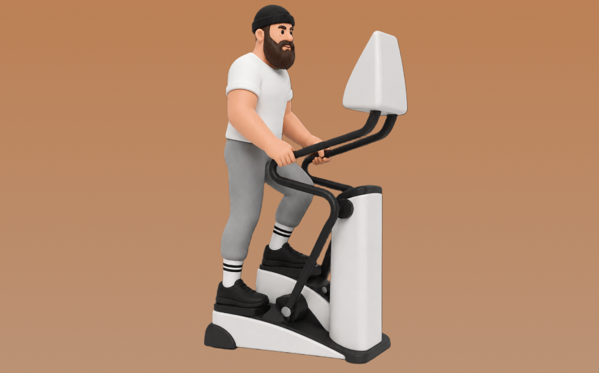

ステップマシン

ステップマシンとは、マシンを使って「踏み台昇降のように踏み込む」動作を行い、主に下半身と心肺機能を鍛える有酸素トレーニングです。リズムよく続けやすいのが特徴で、左右交互に踏み込む動作を繰り返します。これにより、持久力向上や脂肪燃焼が期待できます。
- 対象部位
- 有酸素
- 器具
- マシン
- 記録形式
- 時間
- 別名
- ステップマシン / ステッパー / エアロステッパー / step machine / stepper / stepper machine / aerobic stepper
YouTube動画
-
ステップ＜有酸素マシン＞
-
ステッパーエクササイズ ステッパーの正しい使い方編
-
ステッパーの踏み方！ポイントは３つ
-
【１日１０分】ステッパーで有酸素運動！脂肪燃焼トレーニング
-
ステッパーはショップジャパンのナイスデイがオススメ【ダイエット】
-
ステッパーの効率的な使い方〜有酸素運動・筋トレ〜
-
ステッパー５分間！全身痩せ運動一緒にやってみよう！ #下半身痩せ #ステッパー #有酸素運動
-
ステッパーの踏み方 〜基本編〜
-
私が気をつけているステッパーの踏み方について
-
【脚やせダイエット】おすすめステッパー比較＆前ももやふくらはぎを太くしない乗り方！【有酸素】
-
魔法教えます！「お尻に効くバイクの乗り方」有酸素マシン編【トレーニングマシン】
-
お尻にも効く！「クロストレーナー」最強有酸素マシン ティップネスしか知らない世界
-
STEADY 「ツイストステッパー」 使用解説動画
-
ジムトレの基本マシン【クロストレーナー】の使い方解説〜効率的に有酸素運動＆全身トレーニング〜
YouTubeショート
-
ステップマシン
-
ベンチプレスの正しいやり方を紹介 #筋トレ #フィットネス
-
膝に優しく、ウォーキングの2倍の消費カロリー #shorts #ステッパー #ヘブンリーステッパー #有酸素運動 #ウォーキング #宅トレ
-
変えるのは踏み込み方｜ツイストステッパーの効果的な乗り方②
動作方法
- ウォームアップで心拍を段階的に上げる
- 目的に合わせてペースを設定する
- 終了後はクールダウンで整える
動作ポイント
- 呼吸を止めない
- 開始直後に追い込みすぎない
ワンポイントアドバイス
- 体調に合わせて時間や強度を調整する
- ペースより継続を優先する
目的別回数設定
目的や体力に応じた一般的な目安です。無理のない範囲で調整してください。
- 筋力アップ
- 高強度 20〜60秒
- 筋肥大
- 中強度 10〜20分
- 持久力アップ
- 低〜中強度 20〜60分
YouTube動画について
動画はYouTubeの公開情報をもとに表示しています。内容は投稿者によるもので、Biggrによる監修ではありません。
アプリを入手
筋トレやトレーニングの記録はBiggrにお任せください。今すぐ無料で使い始められます。